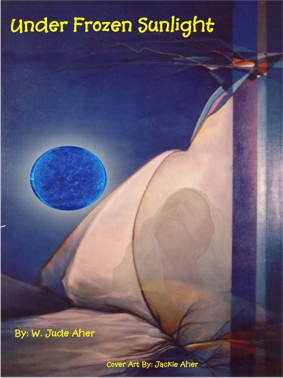
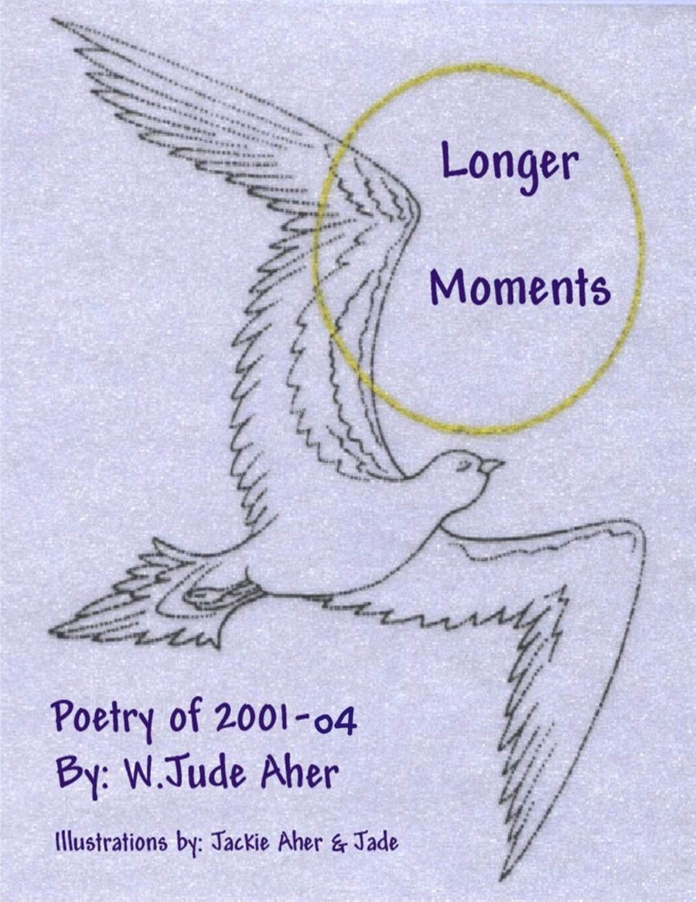
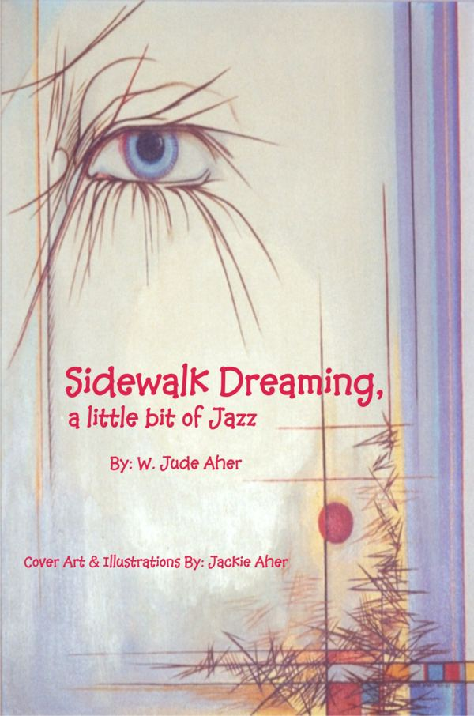

The Books below now available for purchase; My Art carries so much better in real life!
SUPPORT A POET...or just read online for free.

"Also available at Amazon.com"A collection of Poetry, 2011 thru 2013. Drift within the soul of a Poet. Travel across Time, perception and the Universe unseen.
Believe in Life and Death. When vision is truth unseen a Poet creates Art!
"Now also available at Amazon.com"
A collection of short stories and plays written between the years; 1972 and 1991. The Odyssey of a Mad Hippie as a Madder Poet
covering
the years 1969 thru 1991 in the United States of America, a country who no
longer believes in Poets.)
NEW! "Now also available at Amazon.com"
(Includes Poetry from: Where Time Sings-2008, Winter Jazz-2009 & Below a Blood's Rhythm-2010)
"Now also available at Amazon.com"
(Includes: Turning road blues, Memories, Shadows & Doors-Vietnam still, and a few 60's Poems)

"Now also available at Amazon.com"(Includes Poetry from: Longer Moments-2002, The Eyes-2003 & The Years-2004)
"Now also available at Amazon.com"
(Includes Poetry from: If Time Believes-2005, Behind the Blood-2006 & Ghosts-2007)
"Now also Available at Amazon.com"
(An Illustrated Children's Book)

"Now also Available at Amazon.com"(Poetry and illustrations spanning 1984 thru 2001)
"Now also Available at Amazon.com"
(Poetry and illustrations spanning 1978 thru 1983)